Aberration
Aberration je treća story mapa ARK-a koja je izašla 12. prosinca 2017. kao plaćeni DLC koji je tada koštao €19.99.
Ova mapa je podzemni ARK bez letećih dinosaura i ostalih stvorenja, fokusiran na vertikalno kretanje, radioaciju i bioluminescentna stvorenja.
Aberration je oštećeni ARK i njegova unutarnja atmosfera je procurila, što je rezultiralo opasnom površinom s intenzivnim zračenjem i mnogo bioma ispod zemlje.
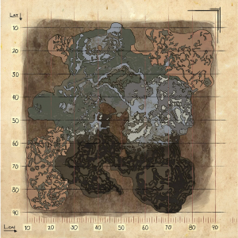
Po čemu je ova mapa posebna:
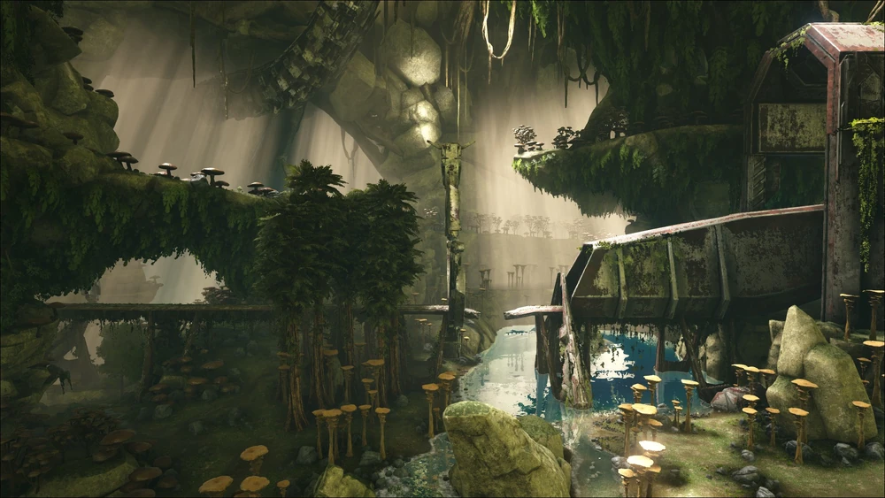
Aberration je mapa koja se cijela nalazi ispod zemlje u ogromnim špiljama.
Ova mapa se fokusira na vertikalno putovanje, a najveći izazov je taj da nema letećih stvorenja poput Pteranodona i Argentavisa.
S toga je potrebno se oslanjati na druge metode vertikalnog putovanja poput climbing pick-ova i zip-line-a.
Što se tiče resursa koje ova mapa donosi, tu se najznačajniji Gem-ovi, koji dolazeu Zelenoj, Plavoj i Crvenoj dormi i koriste se u mnogim receptima.
Također donosi i gljive koje se mogu koristiti kao hrana ili za pripitomljavanje Light Pet-ova.
Tu je također i fungal wood koja je nova vrsta drveta i služi kao zamjena za normalno drvo u receptima s dodatkom novih recepta.
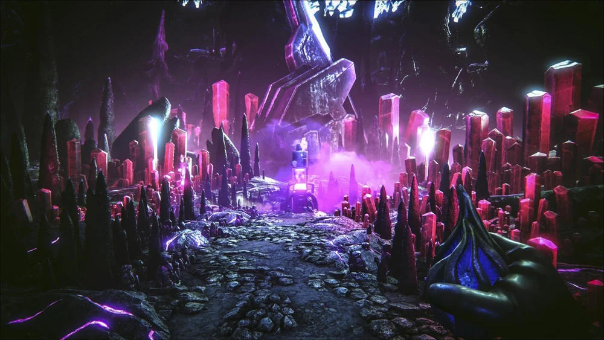
Stvorenja koja se ovdje mogu naći:
Ravager je stvorenje nalik vuka koje se nalazi u Zelenoj Zoni.
Stvara se u čoporima i vrlo su opasni na početku igre jer su brži od vas i, kada ugrizu, daju bleeding effect što vam skida HP u postotcima po sekundi.
Kada je pripitomljen, jako je koristan za putovanje jer ima mogućnost kretanja po zip-line-ima i lijanama što jako olakšava kretanje na ovoj mapi.
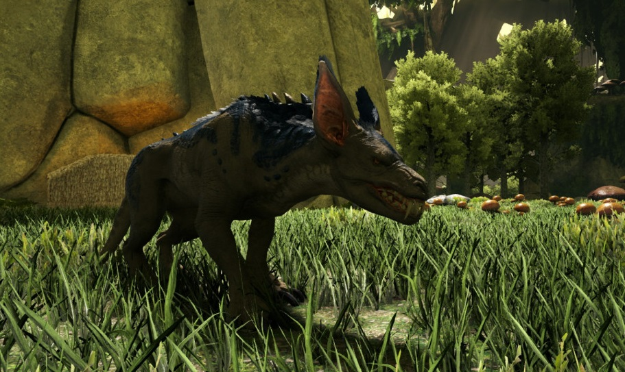
Nameless je stvorenje nalik goblina koje se stvara u Plavoj i Zelenoj Zoni.
Stvaraju se kada uđete u jednu od tih zona bez Light-Peta i njihovog light effecta. Slabi su na svijetlost pa ako su ublizini svijetla, dobiju debuff i lakši su za ubiti.
Oni se nemogu pripitomiti i služe samo kao dodatna opasnost mape.
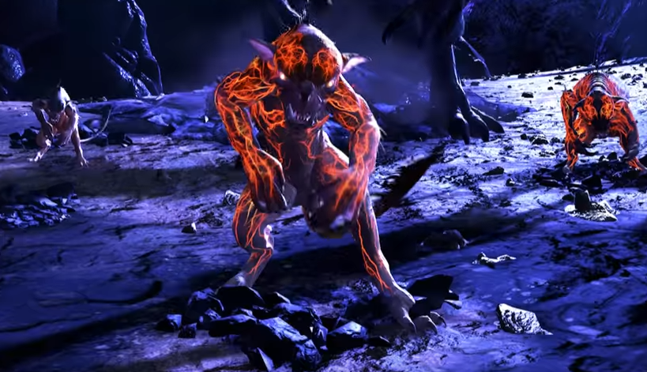
Light Pet-ovi su mala stvorenja koja su posebna na ovoj mapi s time da svijetle u mraku.
Njihovo svijetlo je ono što tira nameless-e podalje od vas i omogućuje sigurnije putovanje ovom mapom.
Postoje četiri stvorenja koja spadaju pod Light Pet-ove: Bulbdog, Glowtail, Shinehorn i Featherlight.
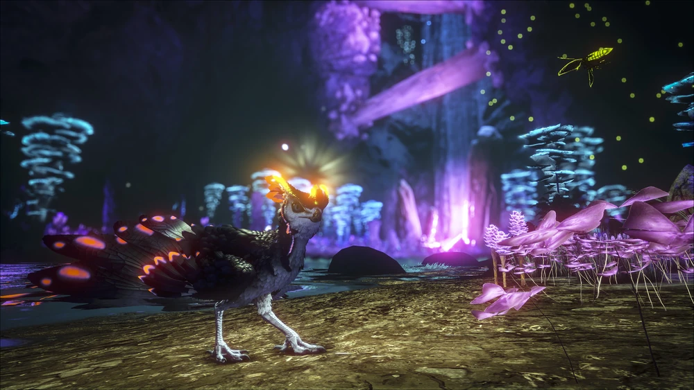
Rock Drake je najkorisnije stvorenje ove mape. Sa svojim mogućnostima jedrenja zrakom i penjanja svim uzbrdicama i stropovima, omogućuje najlakšu formu kretanja ovom mapom.
Stvara se u Plavoj i Crvenoj Zoni, ali se ne može pripitomiti na standardan način. Potrebno je otići u njihovo gnijezdo u Crvenoj Zoni i ukrasti jaje te sam odgajati bebu dok ne izraste i tek tada ćete imati svojega Rock Drakea.
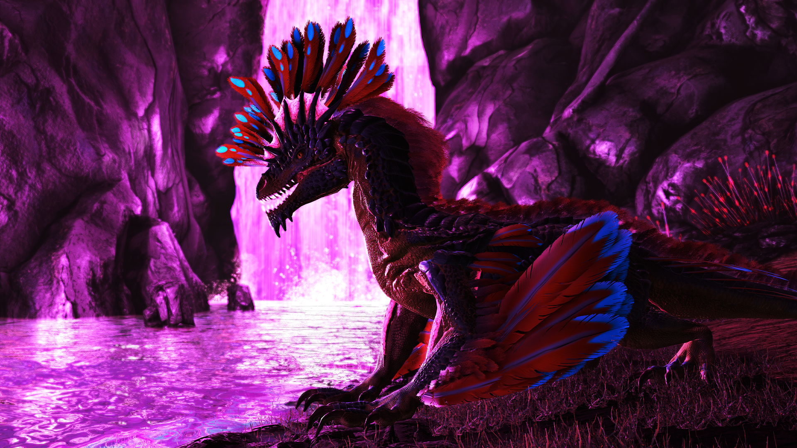
Reaper je najopasnije stvorenje cijelog Aberrationa. Stvara se u Crvenoj zoni i na površini i najstrašnije je stvorenje ove mape.
Stvara ju se kao Reaper Queen i Reaper King varijante od kojih ni jedan se ne može pripitomiti na standardan način.
Inspiriran Xenomorphom iz Alien filmova, pripitomljava se tako da Reaper Queen stavi embrijo unutar vas koji se razvija i izađe kroz vaša prsa kao beba Reaper.
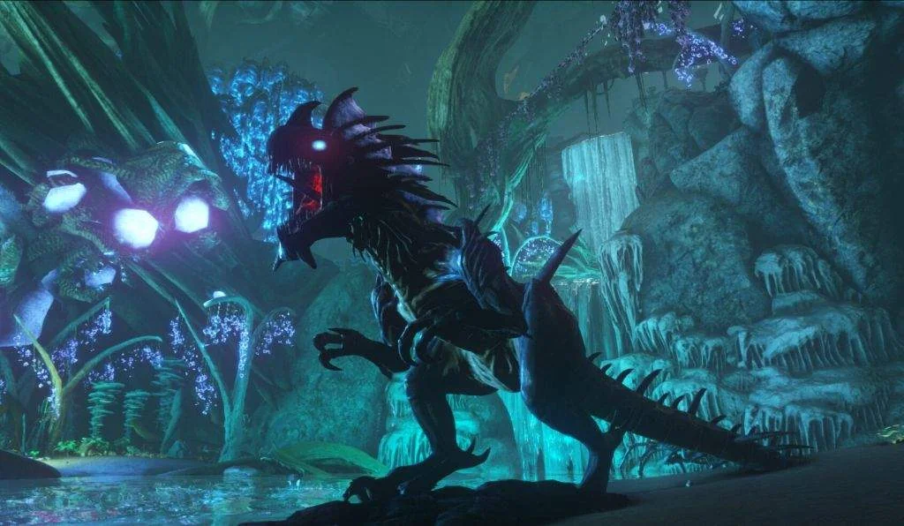
Biomi:
Fertile Region također poznat kao Green Zone je najviša i najsigurnija zona Aberrationa.
Iako je najmanje opasna zona, to ne znaći da je sigurna, jer ovdje se nalaze najmanja no i najbrža stvorenja koja se većinom stvaraju u čoporima poput Raptora i Ravagera.
Ova zona nema previše resursa ali idalje ima dovoljno za početak preživljavanja dok niste dovoljno spremni za ići u iduću zonu. Najznačniji resurs ove zone je Green Gem.
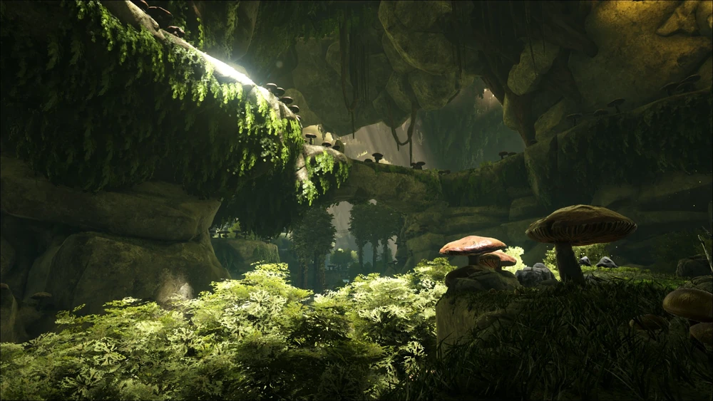
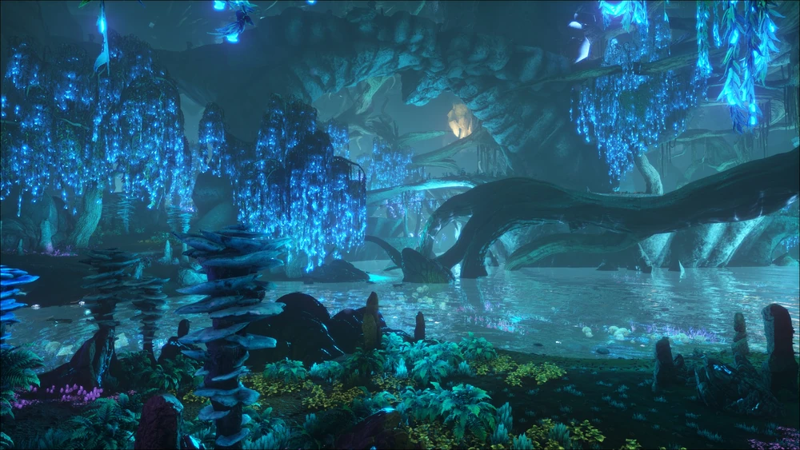
Bio-luminescent Region također poznat kao Blue Zone je iduća zona koja se nalazi ispod Fertile Region-a.
Ova zona je jako hladna i mraćna i upravo radi toga, u ovu zonu se nemože sigurno putovati bez Light Pet-a jer će se ubuduće stvarati Nameless-i.
Ova zona je prepuna resursa poput metala i blue gem-a, no radi toga ovdje žive puno opasnija stvorenja poput Megalosaura.
Molten Element Region također poznat kao Red Zone je najdublja i najopasnija zona Aberrationa.
Cijelom zonom vlada radioacija i nemoguće je preživjeti bez Hazard Suit opreme.
Također niti nema pitke vode nego se samo nalaze jezera otopljenog elementa s kojim ako dođete u kontak se uništo cijelo vaše odijelo.
U ovoj zoni se nalaze Reaper-i i Rock Drake-ovi uključujući gnijezdo Rock Drake-a gdje se mogu naći njihova jaja.
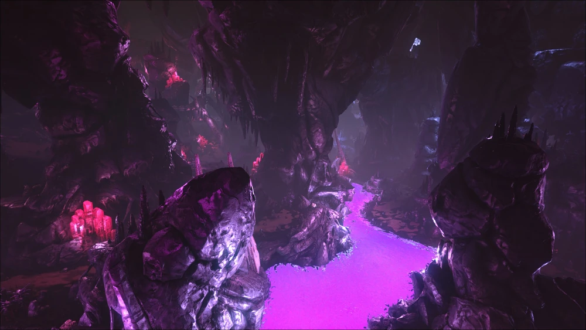
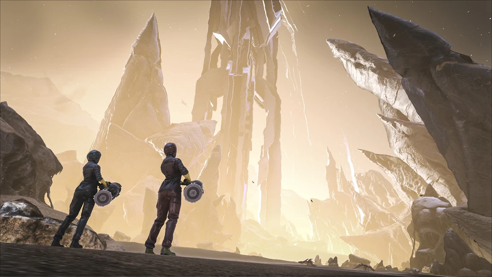
The Surface je vanjski dio Aberrationa. Pun je zračenja te je nemoguće tamo biti tijekom dana nego samo po noći.
Površina je prepuna Reaper-a do te mjere da se morate cijelo vrijeme kretati i biježati od njih.
Razlog zašto se uopće putuje na površinu su Loot Drop-ovi koji sadrže najbolje stvari u igri koje će biti potrebne za Boss-Fight ove mape.